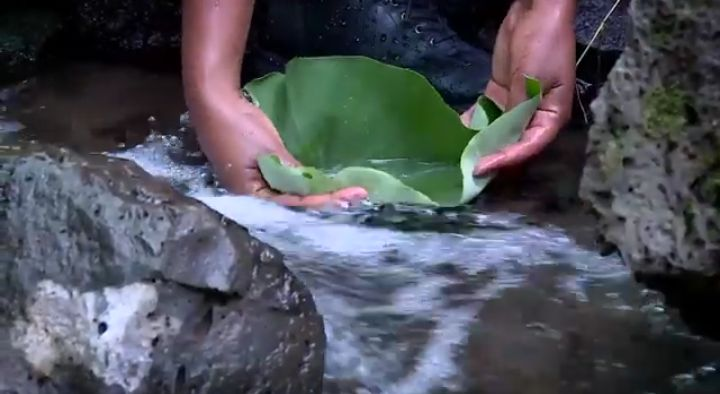

The Fourty springs
When u enter through the main gate, there are two roads. The first goes to the fourty springs while the other passes to Nechsar national park .
I choose the fourty springs to see first.There was around 2-3 kms in between which i choose to reach with car.
The street is full of trees which gives a perfect opportunity to unwind and appreciate the beauty of nature.
according to the tour guide, the city was founded in 1955 by a local leader known as "Fitawrari"(whose full name I unfortunately couldn't recall).
He first come to this place, see and count the springs and observe that they are around 40 and declared the city's name as"Arbaminch" to the city.
Spring Water Facts
- Completely natural mineral water
- No chemical treatment needed
- Local villagers' primary water source
- 2-3km bike ride through lush greenery
The Crocodile ranch
We continued our journey to the crocodile ranch. The tour guide informed me that there are over 2,500 crocodiles there.
I saw many crocodiles lounging around a small lake.this is the picture of them.
interestingly, crocodiles are farmed for their leather.
What shocked me was hearing that after their skin is harvested, the carcasses are fed to other crocodiles.
Sometimes, larger crocodiles even eat smaller ones.
Crocodiles do not chew their food; they swallow it whole.
They bask in the sun with their mouths open because the air and sunlight helps them digest their food.
Amazing nature
I also asked about why a person's fake cry is usually said "crocodile tears" (in Amharic: "yeazo emba").
They explained me that crocodiles cry in two situations: The first one is, inorderto lubricate their eyes
when they are out of water and their eyes are dry but not because they are sad.
The other is, when they swallow a food that is too big for them, they may sweat and shed tears while struggling to swallow.
so they cry without being sad. This is why we use the term "ye azo emba" for people who pretend to be sad.
Crocodile's Behavior
- Bask in sunlight after eating
- Sensitive to loud noises
- Eat only twice a week
- Swallow whole food
The Experience
When i reach to the springs i see that there are 40+ springs flowing downward in a naturally interesting way. The villagers also get the water they drink from there. Visitors can drink directly from the springs using traditional methods-cupping water in large leaves as the locals have done for generations. The water is cool, refreshing, and carries the clean taste of untouched nature. And i observe that the water is drunk without adding any chemical to it. I also taste the water pouring with a leaf (that they used to drink) the image here shows when i try to drink the water with the leave.